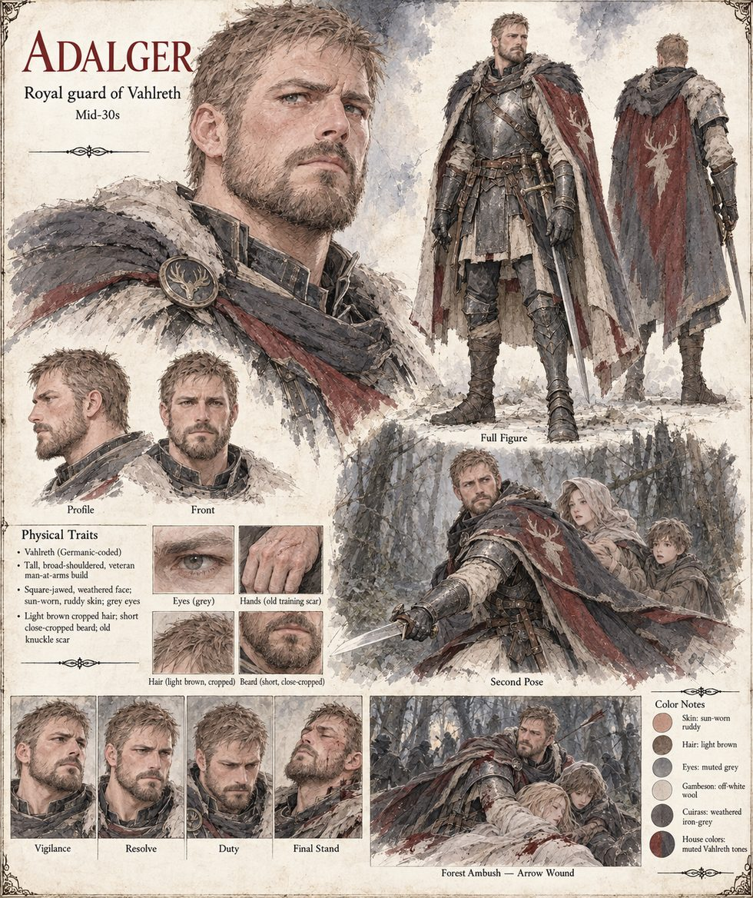

Adalger
Soldier of Vahlreth, clears the passage at the postern · killed at the second river · mid-thirties by his sheet
A soldier who comes three steps behind Hildegund at the postern, clearing the passage of anyone too slow to have already fled it. He dies at the second river the way soldiers rarely die in the songs and more often die in fact: unglamorously, mid-sentence, an arrow finding the gap between two plates of a cuirass that had fit him perfectly for six years and had simply, on this one night, not fit him fast enough. He does not finish telling Reinolt which way the ground slopes; Reinolt finds out anyway, a moment later, the hard way. It is Adalger Reinolt has shared a mess table with for six years, and whose fall, with none of the ceremony the songs later give it, leaves him sick in the wet bracken. Hildegund, who did not weep for Gero where anyone could see, weeps for Adalger exactly once, alone behind the shack, for as long as it takes water to boil, and then goes back inside and asks how far it is to her uncle's border.
The manuscript gives him a name and a death and no appearance, and lists him in the Archival Log as a soldier. The sheet's mid-thirties, light-brown cropped hair and short beard, grey eyes, plate armour and red cloak with a stag's head are its own; it calls him a royal guard, where the Cast List says soldier.
Appears In

Related Subjects


Related Records

In a burning corridor, with Reinolt at her shoulder and Adalger three steps behind, Hildegund feels the ceiling ahead go orange and the Hereditary Marker wake. It strikes through every branch that ends with her dead and leaves her one number: left.

At the second river Adalger dies mid-sentence with an arrow in the gap of his cuirass, and a third arrow, Hagen's, finds Hildegund low in the side. Reinolt takes an arrow in the shoulder, and the number turns northeast, toward the hermit in the forest.